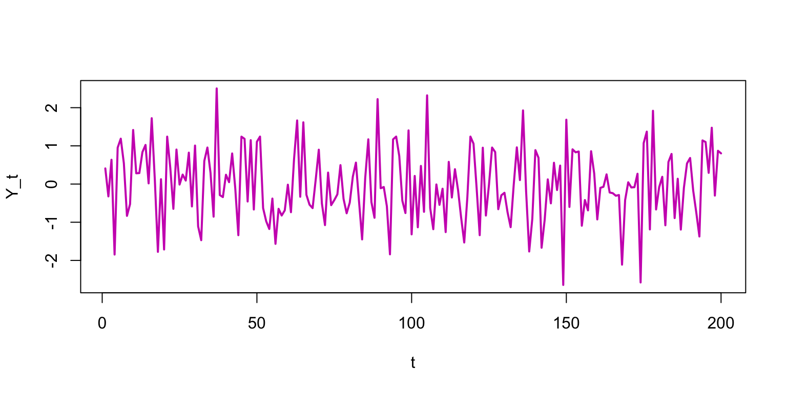

VectorByte Methods Training
Regression Methods for Time Dependent Data
Learning Objectives
Time Dependent Data
Much of the data we collect in VBD applications depends on time such as
- observed cases in a city or country
- number of mosquitoes over time
Additionally, we often assume that the reasons these change over time may be because covariates (e.g., temperature, precipitation, insecticide spraying) change over time.
How do we incorporate these time varying factors into our regression models?
Types of time dependent data
The most common type of time-dependent data that statisticians talk about is time series data. These are data where observations are evenly spaced with no (or very little) missing observations.
Although evenly spaced data are ideal (and the most common methods are designed for them), in VBD survey data we often don’t have evenly spaced observations. These data don’t have a specific name, and most time-series methods can’t be directly used with them.
Time series data and dependence
Time-series data are simply a collection of observations gathered over time. For example, suppose \(y_1, \ldots, y_T\) are
- daily temperature,
- solar activity,
- CO\(_2\) levels,
- yearly population size.
In each case, we might expect what happens at time \(t\) to be correlated with time \(t-1\).
Suppose we measure temperatures, daily, for several years.
Which would work better as an estimate for today’s temp:
- The average of the temperatures from the previous year?
- The temperature on the previous day?
How would this change if the readings were iid \(\mathcal{N}(\mu, \sigma^2)\)?
Correlated errors require fundamentally different techniques.
Example: \(Y_t =\) average daily temp. at ROA, Feb-Mar 2018.
- “sticky” sequence: today tends to be close to yesterday.
Example: \(Y_t =\) monthly UK deaths due to lung infections

- The same pattern repeats itself year after year.
Example: uncorrelated samples from a normal random number generator.
- It is tempting to see patterns even where they don’t exist.
Checking for dependence
To see if \(Y_{t-1}\) would be useful for predicting \(Y_t\), just plot them together and see if there is a relationship.
- Correlation between \(Y_t\) and \(Y_{t-1}\) is called autocorrelation.
We can plot \(Y_t\) against \(Y_{t-\ell}\) to see \(\color{red}\ell\)-period lagged relationships.
- It appears that the correlation is getting weaker with increasing \(\ell\).
Autocorrelation (for time series data)
To summarize the time-varying dependence, compute lag-\(\ell\) correlations for \(\ell=1,2,3,\ldots\)
In general, the autocorrelation function (ACF) for \(Y\) is \[\color{red}{r(\ell) = \mathrm{cor}(Y_t, Y_{t-\ell})}\]
For our Roanoke temperature data:
0 1 2 3 4 5 6 7 8
1.000 0.658 0.298 0.263 0.297 0.177 0.111 0.008 -0.099
9 10 11 12 13 14 15 16 17
-0.045 0.071 -0.020 -0.157 -0.156 -0.146 -0.278 -0.346 -0.314 R’s acf function shows the ACF visually.
It provides a visual summary of our data dependence.
(Blue lines mark “statistical significance” for the acf values.)
The lung infection data shows an alternating dependence structure which causes time series oscillations.
An acf plot for \(iid\) normal data shows no significant correlation.
Autoregression
How do we model data that exhibits autocorrelation?
Suppose \(Y_1 = \varepsilon_1\), \(Y_2 = \varepsilon_{1} + \varepsilon_{2}\), \(Y_3 = \varepsilon_{1} + \varepsilon_{2} + \varepsilon_{3}\), etc.
Then \(\color{dodgerblue}{Y_t = \sum_{i=1}^{t}\varepsilon_i = Y_{t-1} + \varepsilon_t}\) and \(\color{dodgerblue}{ \mathbb{E}[Y_t] = Y_{t-1}}\).
This is called a random walk model for \(Y_t\):
- the expectation of what will happen is always what happened most recently.
Random walks are just a version of a more general model ...
The autoregressive model of order one holds that \[ \color{red}{AR(1): Y_t = \beta_0 + \beta_1Y_{t-1} + \varepsilon_t, \;\;\; \varepsilon_t \stackrel{\mathrm{iid}}{\sim}\mathcal{N}(0, \sigma^2).} \] This is just a SLR model of \(Y_t\) regressed onto lagged \(Y_{t-1}\).
It assumes all of our standard regression model conditions.
The residuals should look \(iid\) and be uncorrelated with \(\hat{Y~}_t\).
All of our previous diagnostics and transforms still apply.
For the Roanoke temperatures, there is a clear autocorrelation:
Coefficients:
Estimate Std. Error t value Pr(>|t|)
(Intercept) 15.2420 4.5729 3.333 0.00153 **
weather$temp[1:58] 0.6584 0.1007 6.541 1.98e-08 ***
---
Signif. codes: 0 `***' 0.001 `**' 0.01 `*' 0.05 `.' 0.1 ` ' 1
Residual standard error: 7.328 on 56 degrees of freedom
Multiple R-squared: 0.4331, Adjusted R-squared: 0.423
F-statistic: 42.78 on 1 and 56 DF, p-value: 1.98e-08- The autoregressive term (\(b_1 \approx 0.66\)) is highly significant!
We can check residuals for any “left-over” correlation.
- Looks like we’ve got a good fit.
For the lung infection data, the autoregressive term is also highly significant.
Coefficients:
Estimate Std. Error t value Pr(>|t|)
(Intercept) 487.13140 162.00888 3.007 0.00368 **
ld[1:71] 0.75571 0.07546 10.015 4.39e-15 ***
---
Signif. codes: 0 `***' 0.001 `**' 0.01 `*' 0.05 `.' 0.1 ` ' 1
Residual standard error: 387.6 on 69 degrees of freedom
Multiple R-squared: 0.5924, Adjusted R-squared: 0.5865
F-statistic: 100.3 on 1 and 69 DF, p-value: 4.39e-15But residuals show a clear pattern of left-over autocorrelation.
- We’ll talk shortly about how to model this type of pattern ...
Many different types of series may be written as an AR\((1)\). \[ AR(1): Y_t = \beta_0 + \beta_1Y_{t-1} + \varepsilon_t \]
The value of \(\color{dodgerblue}{\beta_1}\) is key!
If \(|\beta_1| = 1\), we have a random walk.
If \(|\beta_1| > 1\), the series explodes.
If \(|\beta_1| < 1\), the values are mean reverting.
Random walk
In a random walk, the series just wanders around.
Autocorrelation of a random walk stays high for a long time.
The random walk has some special properties ...
\(\color{dodgerblue}{Y_t - Y_{t-1} = \beta_0 + \varepsilon_t}\), and \(\beta_0\) is called the “drift parameter”.
The series is nonstationary:
- it has no average level that it wants to be near, but rather just wanders off into space.
The random walk without drift (\(\color{red}{\beta_0 = 0}\)) is a common model for simple processes
- since \(\mathbb{E}[Y_t] = \mathbb{E}[Y_{t-1}]\), e.g., tomorrow \(\approx\) today
Exploding series
For AR term \(>1\), the \(Y_t\)’s move exponentially far from \(Y_1\).
- Useless for modeling and prediction.
Stationary series
For \(\beta_1<1\), \(Y_t\) is always pulled back towards the mean.
- These are the most common and useful type of AR series.
Autocorrelation for the stationary series drops off right away.
- The past matters, but with limited horizon.
Mean reversion
An important property of stationary series is mean reversion.
Think about shifting both \(Y_t\) and \(Y_{t-1}\) by their mean \(\mu\). \[ \color{dodgerblue}{Y_t - \mu = \beta_1 (Y_{t-1} - \mu) +\varepsilon_t} \] Since \(|\beta_1| < 1\), \(Y_t\) is expected to be closer to \(\mu\) than \(Y_{t-1}\).
Mean reversion is all over, and helps predict future behavior:
- weekly sales numbers,
- daily temperature.
Negative correlation
It is also possible to have negatively correlated AR(1) series.
- But you see these far less often in practice.
Summary of AR(1) behavior
\(\color{dodgerblue}{|\beta_1|<1|}\): The series has a mean level to which it reverts over time (stationary). For \(+\beta_1\), the series tends to wander above or below the mean level for a while. For \(-\beta_1\), the series tends to flip back and forth around the mean.
\(\color{dodgerblue}{|\beta_1|=1|}\): A random walk series. The series has no mean level and, thus, is called nonstationary. The drift parameter \(\beta_0\) is the direction in which the series wanders.
\(\color{dodgerblue}{|\beta_1|>1|}\): The series explodes, is nonstationary, and pretty much useless for prediction.
AR(\(p\)) models
It is possible to expand the AR idea to higher lags \[ \color{red}{AR(p): Y_t = \beta_0 + \beta_1Y_{t-1} + \cdots + \beta_pY_{t-p} + \varepsilon}. \]
However, it is seldom necessary to fit AR lags for \(p>1\).
Like having polynomial terms higher than 2, this just isn’t usually required in practice.
You lose all of the stationary/nonstationary intuition.
Often, the need for higher lags is symptomatic of (missing) a more persistent trend or periodicity in the data, or needing predictors ...
Trending series
Often, you’ll have a linear trend in your time series.
\(\Rightarrow\) AR structure, sloping up or down in time.
This is easy to deal with: just put “time” in the model.
AR with linear trend: \[ \color{red}{Y_t = \beta_0 + \beta_1Y_{t-1} + \beta_2t + \varepsilon_t} \]
Coefficients:
Estimate Std. Error t value Pr(>|t|)
(Intercept) -0.571525 0.178110 -3.209 0.00156 **
sst[1:199] 0.735840 0.048062 15.310 < 2e-16 ***
t -0.009179 0.002160 -4.249 3.32e-05 ***Periodic models
It is very common to see seasonality or periodicity in series.
Temperature goes up in Summer and down in Winter.
Gas consumption in Blacksburg would do the opposite.
Recall the monthly lung infection data:
- Appears to oscillate on a 12-month cycle.
The straightforward solution: Add periodic predictors.
\(\mathrm{Period}\!-\!k~\mbox{model}\!:\) \[ \color{red}{Y_t = \beta_0 + \beta_1\sin(2\pi t /k) + \beta_2\cos(2\pi t /k) + \varepsilon_t} \]
Remember your sine and cosine! (Repeating every \(2\pi\))
\(\mathrm{Period}\!-\!k~\mbox{model}\!:\) \[ \color{red}{Y_t = \beta_0 + \beta_1\sin(2\pi t /k) + \beta_2\cos(2\pi t /k) + \varepsilon_t} \]
It turns out that you can represent any smooth periodic function as a sum of sines and cosines.
You choose \(k\) to be the number of “times” in a single period.
For monthly data, \(k = 12\) implies an annual cycle.
For quarterly data, usually \(k=4\).
For hourly data, \(k=24\) gives you a daily cycle.
Let’s fit an AR with sine/cosine predictors: \[ \color{red}{Y_t = \beta_0 + \beta_1Y_{t-1} + \beta_2\sin(2\pi t /k) + \beta_3\cos(2\pi t /k) + \varepsilon_t} \]
We want to make new predictors/data , much like when we add polynomial terms, and then fit.
Coefficients:
Estimate Std. Error t value Pr(>|t|)
(Intercept) 1379.3598 247.5536 5.572 4.84e-07 ***
ldpast 0.3260 0.1189 2.741 0.007853 **
sin12 377.5492 101.9206 3.704 0.000431 ***
cos12 402.7845 44.8015 8.990 3.98e-13 ***The model predictions look pretty good!
- Sine and cosine trends seem to capture the periodicity.
The residuals look pretty good.
- Maybe a bit of downward linear trend?
Alternative Periodicity
An alternative way to add periodicity would be to simply add a dummy variable for each month (feb, mar, apr, ...).
This achieves basically the same fit as above, without requiring you to add sine or cosine.
However, this takes 11 periodic parameters while we use only 2.
I like to think of the periodicity as a smooth oscillation, with sharp day/month effects added for special circumstances.
Requires more thought, but leads to better models.
The \(\sin+\cos\) technique works regardless of the number of increments in a period (e.g. 365 days).
The exception:
- Since quarterly data has a period of only 4, it is often fine to just add “quarter” effects.
Non-time series data
All of the models/tools we explored that incorporate auto-correlation are not valid if data are not evenly spaced.
- You can’t calculate an auto-correlation if the gap between data points and the earlier points aren’t all the same because we don’t expect all lags to have the same correlation.
The simplest approach is to just go back to treating it like normal regression (without AR terms) – acknowledging that there could be residual auto-correlation that you can’t get rid of because you can’t quantify it properly.
So we might:
- include
timeas a predictor – not simple counting, but incorporating gaps. E.g., the iso-week of a sample. - include in
sineandcosineas before, but again, with the appropriate value corresponding to the time of observation instead of number of observation - add in time dependent predictors
Time Dependent Predictors
Often we have additional measurements of possible covariates that might impact the time-dependent responses that we want to model. E.g. in VBD systems:
- weather variables: temperature, rainfall, humidity
- habitat/climate variables: greenness, ENSO, land use, container densities
- socio-economic variables: bed net coverage, insecticide spraying
These may all depend on time, and can be incorporated into a model for all time dependent data (including time series!).
Time-Lagged Predictors
Additionally, sometimes there may be a lag between an observed covariate and the response.
Example: The number of people being hospitalized for dengue on a particular day reflect the number of people infected days before, and potentially mosquitoes infected days before that!
Thus, proxies of mosquito abundance, like temperature or humidity, weeks earlier may be appropriate predictors.
How can we determine an appropriate lag for a predictor?
Two Strategies
The first is what we might call a scientific approach:
- Using our system knowledge, we can define what might be feasible time lags to include in a model, given evenly sampled predictor data. We decide and include just those a priori lags, and maybe do model/feature selection to narrow down.
This approach may miss a best lag for time series data, but is often the main way we can try to find appropriate lags for unevenly sampled data.
(Note, we almost always assume a lag of at least 1.)
Alternatively, for time series data we might take a systematic data exploration approach:
- For predictors under consideration, explore the cross-correlation – that is the (normalized) correlation between your response and multiple lags of your potential predictor.
Then you can choose to use lags that are highly related to your response as possible model predictors.
Example: maybe we think that the amount of precipitation on previous days might be a good predictor for temperature in Roanoke. We can check this using the ccf function in R:
Coming up!
The tools here are good, but not the best:
In many situations you want to allow for \(\beta\) or \(\sigma\) parameters that can change in time.
This can leave us with some left-over autocorrelation.
We’ll talk more about more sophisticated models over the next couple of days.
Practice
Now we’ll practice combining our regression tools with these additional techniques for time-dependent data.
Remember:
- Also ways check your residual plots to ensure that your assumptions have been met
- Transformations are your friend!
- Think carefully about how to line up your lagged predictors